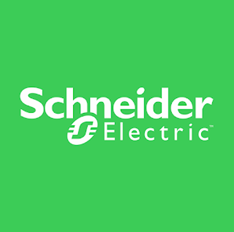

A Schneider Eletric é um grupo multinacional francês, sua sede é localizada em
Rueil-Malmaison uma ilha da França, foi fundada em 1836 porém só foi incorporada em
1981, está presente em 190 países, com mais de 205 fábricas, mais de 105 mil
funcionários, proporcionando os mais elevados níveis tecnológicos, de acordo com as
principais normas de qualidade e segurança nacionais e internacionais.
Especializada em gestão de energia elétrica, automoção além disso, está em primeiro lugar no ranking mundial quando se trata de sustentabilidade. A empresa francesa busca impactar pessoas e organizações a se tornarem mais eficientes empról de um mundo mais sustentável, limpo transformando assim ambicões de sustentabilidade em ações.

Possui 4 fábricas no território brasileiro, presente há 60 anos, com 11 filiais comerciais, além
de ter 1500 pontos de vendas em todos os estados do país, uma delas é a APC que em
2009 adquiriu a Microsol Tecnologia, empresa com endereço cearense, tal fabricante
brasileira que está funcionando há mais de 26 anos, fabrica no-breaks, estabilizadores e
acessórios para proteção de energia com um faturamento exponencial em 2008 de US$ 47
milhões. Em 2011 efetuou a aquisição do Grupo Steck, especialista em materiais elétricos
que contava com 950 funcionários na época.

A partir de 2012, a marca Microsol foi totalmente incorporada, sendo que todos seus produtos agora saem com marca APC, marca usada no Brasil pelo grupo Schneider. As empresas Telemecanique,Luminous Power Technologies Pvt Ltd, TAC, Square D, Areva T&D, APC, Federal Pioneer, PDL Group, Pelco, ELAU, BEI Technologies Cimac, invensys, SolveIT Software, Citect, Clipsal, Merlin Gerin, Merten, Modicon PLC, Nu-Lec e Power Measurement são subsidiárias da Schneider Eletric, que vendem diversos produtos como interruptores, tomadas, Incluindo automação predial, domótica, potência crítica e refrigeração, automoção de rede elétrica, sistemas de segurança industrial e de controle industrial.
Seus principais concorrentes são Siemens AG, Eaton, ABB, Inotech, ABB, Rockwell e o Grupo Legrand empresas que também visam formas mais sustentáveis em pról do desenvolvimento científico.